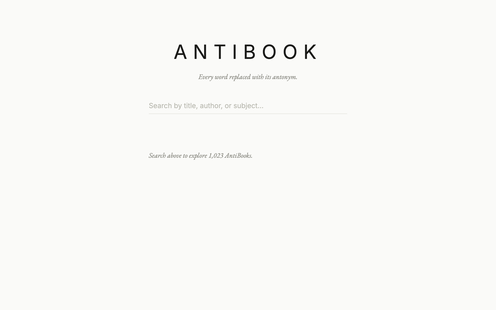

The opening of A Tale of Two Cities is one of the most quoted passages in English literature. "It was the best of times, it was the worst of times." Run it through Antibook and you get something like: "It wasn't the worst of places, it wasn't the best of places." The sentence structure survives. The meaning inverts. The result is absurd in a way that's surprisingly readable.

{kind=link}
Antibook takes books from the Project Gutenberg catalog and replaces every word it can with an antonym. You can search the catalog, pick a book, and read the inverted version in the browser. A compare mode lets you see the original and the antibook side by side.
The antonym problem
Finding the opposite of a word sounds simple until you try to do it at scale. "Hot" maps to "cold" easily enough. But what's the opposite of "Tuesday"? Or "the"? Or "Ebeneezer"? There is no universal antonym for most of the words in a typical sentence. The system needs to handle this gracefully: invert what can be inverted, leave the rest alone, and produce text that still feels like it has a rhythm.
Antibook uses a five-tier antonym lookup. The first tier is a hand-curated dictionary of about 900 word pairs. These are the obvious ones: good/bad, up/down, love/hate, yes/no. Because high-frequency words dominate natural language, this small list covers 60 to 70 percent of the tokens in a typical book by frequency. The second tier pulls from Princeton WordNet via NLTK, adding another 15 to 20 percent. The third tier uses the Moby Thesaurus with transitive closure to find indirect antonym relationships. An optional fourth tier uses GloVe word embeddings to find semantic opposites by vector inversion. Everything that falls through all four tiers gets left unchanged: proper nouns, articles, prepositions, and other words that have no meaningful opposite.
The pipeline
Processing a book is a multi-stage pipeline written in Python. First, the raw text is downloaded from Project Gutenberg and the boilerplate headers and footers are stripped. Then each word is run through the tiered antonym lookup. The transformed text gets chunked into JSON fragments small enough for efficient delivery over GitHub Pages. Finally, an index is built using Fuse.js so users can search the catalog by title or author.
The whole thing runs on free infrastructure. Building the antonym map takes about 10 minutes. Processing 500 books takes roughly 30 minutes in a weekly GitHub Actions run. The output is a static site under 1 GB, served by GitHub Pages with Cloudflare in front.
Results
Dialogue tags still say "he said" because "said" has no antonym. Character names persist. Sentence structure is identical to the original. But within that skeleton, every adjective, verb, and adverb has been flipped. Characters who were brave are now cowardly. Scenes set in daylight happen at night. Love stories become hate stories.
Some books work better than others. Dickens is good source material because his prose is emotionally loaded, so the inversions land. Technical writing is less interesting because flipping clinical language just produces more clinical language.